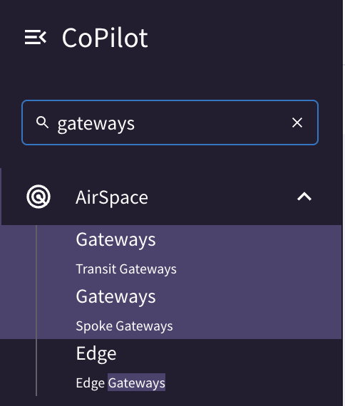
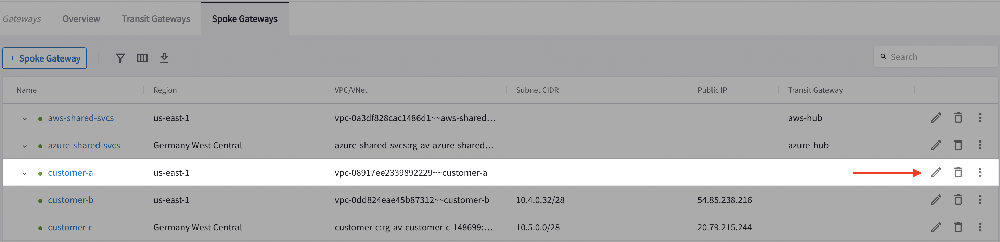
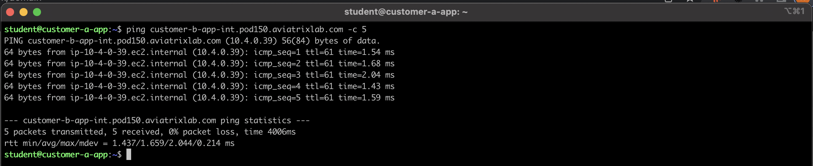
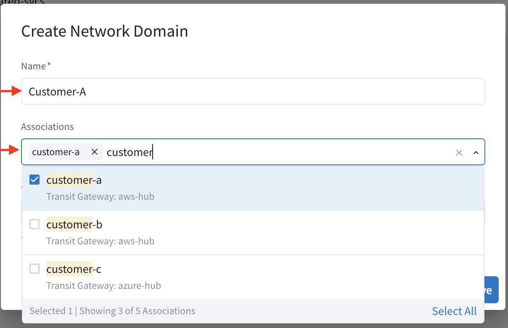
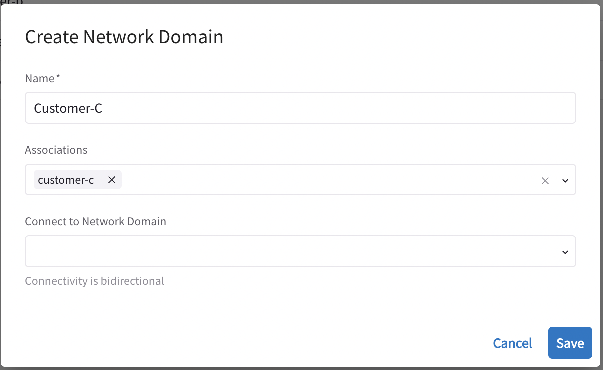
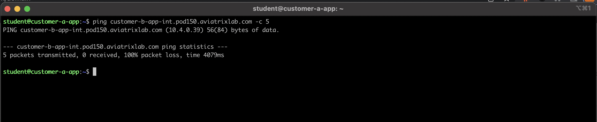
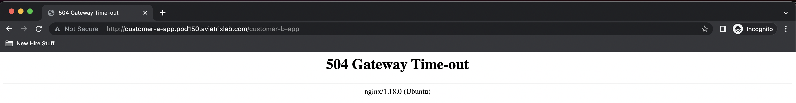
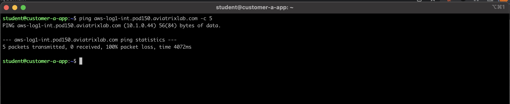
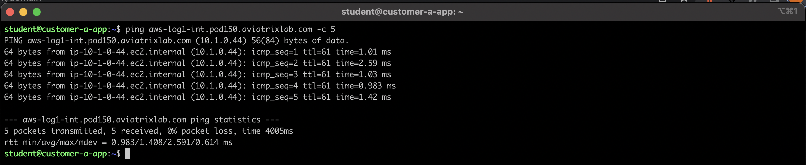
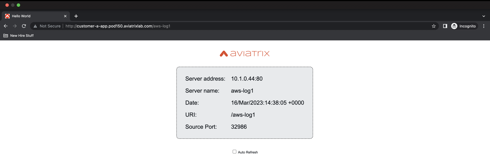

Lab 2 Customer Isolation#
2.0 - What’s in the lab?#
Having recently established our MSP, we have been getting initial demand from customers to host their applications within Cloud.
Customers A already has existing workloads that they are looking to migrate from On-prem to AWS, Customer B is a newly founded startup who decided to initiate their required applications within AWS, whereas Customer C has decided to take the Azure Route. It is also worth noting that the MSP started receiving requests for MultiCloud presence for different business requirements.
The landing zones with the respective workload & spokes have already been created. We will start by connecting those customer landing zones to their respective transits based on their CSP preference as cited above. Next, we have a requirement to ensure total isolation between Tenants.
 _Figure 1: Current State
_Figure 1: Current State
 Figure 2: Copilot Topology Verification
Figure 2: Copilot Topology Verification
2.1 - Connect Customers A to AWS Hub#
In this section, we will be connecting Customer A’s landing zone to AWS Hub.
 Figure 3: Search Bar to Reach Gateways
 Figure 4: Customer A Spoke Edit
 Figure 5: Customer-A AWS Attachment
Figure 5: Customer-A AWS Attachment
2.2 - Connect Customers B to AWS Hub#
In this section, we will be connecting Customer B’s landing zone to AWS Hub.
Figure 6: Customer-B Spoke Edit
 Figure 7: Customer-B AWS Attachment
Figure 7: Customer-B AWS Attachment
2.4 - Connect Customers C to Azure Hub#
In this section, we will be connecting Customer B’s landing zone to Azure Hub.
 Figure 8: Customer-C Spoke Edit
Figure 8: Customer-C Spoke Edit
 Figure 9: Customer-C Azure Attachment
Figure 9: Customer-C Azure Attachment
 Figure 10: Current State
Figure 10: Current State
 Figure 11: Copilot Topology
Figure 11: Copilot Topology
2.5 - Pre-Network Segmentation#
We look at the current state of tenant isolation before enabling any segmentation. The MSP wants to verify total seggregation and isolation between its Tenants.
Please login to Customer A’s application(details are in your lab portal) and initiate a ping towards Customer B’s application. The results are shown in Figure 8.
 Figure 12: Customer A app can ping Customer B app
Figure13 leverages the NGINX Proxy that is built into the instances to check if customer A application can communicate with customer B.
 Figure 13: Customer A app proxy to Customer B app
Figure 13: Customer A app proxy to Customer B app
The output shown above actually provies that as of now, Customer A and Customer B are not isolated and can communicate.
You can also try pinging aws-log1 from customer A application.
2.6 - Create Network Domains#
In order to achieve Tenant isolation, we will be creating multiple Network Domains (a.k.a vrfs) and associating those Network Domains to the respective Spoke Gateways.
One pre-requisite of Network Segmentation is to ensure that the Transits (aws_hub & azure_hub) have segmentation enabled. This is shown in Figure 12 below.
 Figure 14: Enable Segmentation on Transits
Figure 14: Enable Segmentation on Transits
The below diagrams (figures 16 _ 19) show how the Network Domains are created and associated with the respective Spoke Gateways.
 Figure 15: Create Customer-A Network Domain
 Figure 16: Create Shared Svcs Network Domain
Figure 16: Create Shared Svcs Network Domain
Figure 17: Create Customer-B Network Domain
 Figure 18: Create Customer-C Network Domain
2.7 - Verify Customer Segmentation#
Now, we will re-attempt some connectivity tests after we configured the Network Domains.
First, ping Customer B application from Customer A application.
Figure 19: Customer A to Customer B Isolation Ping
Attempt the same test by making use of the NGINX Proxy.
 Figure 20: Customer A to Customer B Isolation Proxy
Figure 21: Customer A to AWS log1 Isolation Ping
In addition, we now notice that Customer A application can’t access the resources in the shared services (e.g. aws_log1). This is an unintended behavior where the MSP wants to ensure all its Tenants can access the shared services workloads.
 Figure 22: Customer A to AWS log1 Isolation Proxy
Figure 22: Customer A to AWS log1 Isolation Proxy
2.8 - Access to Shared Services#
The MSP wants to ensure that all its tenants can access the workloads in the Shared Services. A connection policy is required to allow all customer tenants (customers a,b and c) to access Shared Svcs Tenant. This is shown in Figure 21-23.
 Figure 23: Edit Shared Svcs Domain
Figure 23: Edit Shared Svcs Domain
 _Figure 24: Connection Policy Shared Svcs to all Customers
_Figure 24: Connection Policy Shared Svcs to all Customers
 _Figure 25: Connection Policy Configuration Verification
_Figure 25: Connection Policy Configuration Verification
_Figure 26: Connection Policy Configuration Verification
_Figure 27: Connection Policy Configuration Verification
This is how the final topology actually looks like.
 Figure 28: Current State of the Topology
Figure 28: Current State of the Topology
2.8 - Conclusion#
In this lab we started by connecting all Customer Landing Zones to their respective Hubs. We also had to ensure that Customers are isolated from one another and that all Customers should be able to access Shared Services. This requirement on isolation and connectivity can be met by leveraging Network Domains as well as Connection Policies.